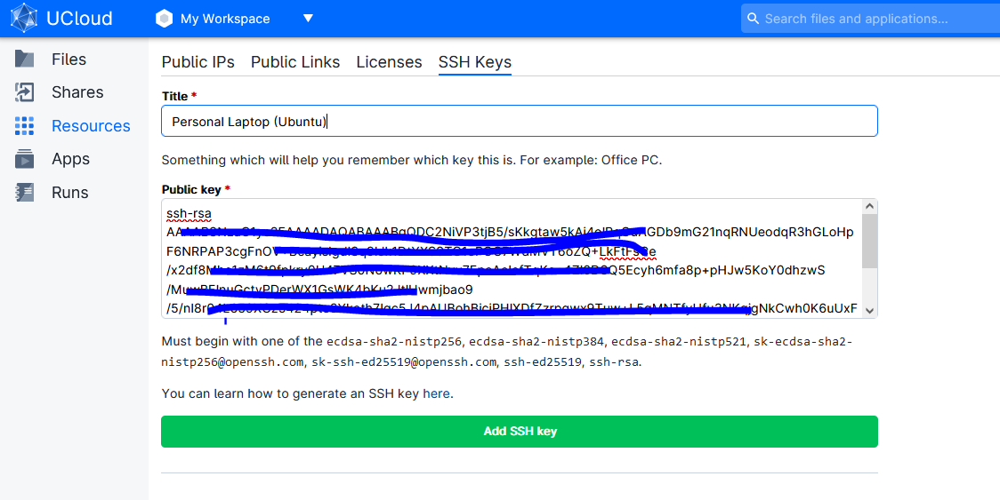

UCloud Tutorial: Transfer large data to UCloud using Rsync
This application is used to deploy an rsync server, which is a utility to efficiently transfer and synchronize files and directories between two different systems
Installing Ubuntu on local machine (For Windows)
Video Tutorial found here
Add public SSH key to UCloud
Information on how to generate a SSH key can be found here
Copy the public SSH key (.pub file) to UCloud.

Apply for a Public IP on UCloud
A UCloud public IP is need to use Rsync. This can be obtained through a UCloud grant application by filling out the field shown below:

The application subsequently needs to be accepted by CBS front office personal.
Start Rsync Job and Configure Ports for Public IP'
Fill out "Job name","Hours", "Machine type".
Step 1: Select the "Public IP", "SSH Public Key" & "Rsync Volume" fields
- "Public IP" - see steps below.
- "SHH Public Key" - Select the .pub file you have just uploaded to UCloud.
- "Rsync Volume" - Select the UCloud folder where the files/folders should be transferred to.

Step 2: If no Public IPs are activated press "Create public ip"

Step 3: Select the "public-ip" product

Step 4: press the "3 dots button" and select "Properties".

Step 5: Open the firewall for ports 22 and 873 as shown below:

Step 6: Select the configured Public IP

Step 7: Start the Job

Step 8: When the Job is ready the IP adress and the password is shown as below:

Open Terminal on local machine (For Windows)
# Activate Ubuntu
wsl
# Navigate to path contain the folder of files to transfer - Alternatively you can open terminal directly in the right directory to skip step below.
cd "path/of/folders-or-files"
# NO ENCRYPTION (NOT RECOMMENDED): Transfer the folder "myfolder" to work/myfolder on UCloud. No Public key should have been uploaded during Rsync Job configuration.
rsync -avP ./myfolder rsync://ucloud@13x.2x5.1x4.13x:873/volume # Exchange to the rigth IP adress
# SSH ENCRYPTION: Transfer the folder "myfolder" to work/myfolder on UCloud. (USing SSH - encrypted)
rsync -avP -e "ssh -i ~/.ssh/id_rsa -p 22" ./myfolder/ ucloud@13x.2x5.1x4.13x:/work/myfolder2
# Change the following to the above line:
# "~/.ssh/id_rsa" : the path to private SSH key as specified through the Ubuntu terminal. The best way to ensure this is to open a Ubuntu terminal in the ".ssh" folder
# "./myfolder/" : the folder folder/files you want to copy over.
# "13x.2x5.1x4.13x": The IP adress
# "/work/myfolder": the path to the Rsync volume.. in this case the folder "myfolder" was chosen.
# Password will be prompted. Copy the password over from the Job "info page". The password will be hidden in the terminal.